제안 = docs/design/tokens.md 의 값과 redesign-2026-10-17-audit.md 표의 「제안」 칸만 적용한 모습. 색·글꼴·문구·그림은 그대로.
각 화면 폴더: before.html(실제 화면을 2026-10-17 에 정적으로 저장) · after.html(같은 원본 + proposal.css + 꼭 필요한 배치 이동) · proposal.css
/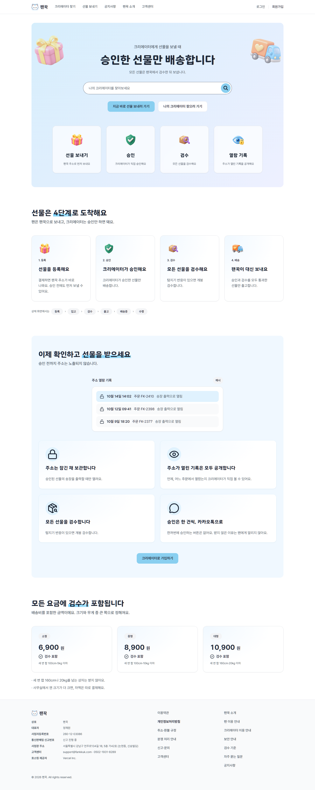
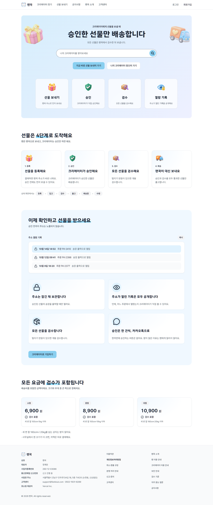
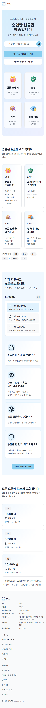
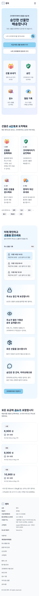
/creators/[id]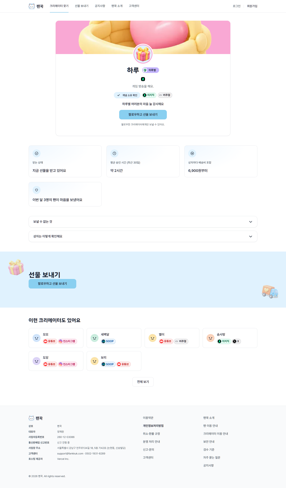
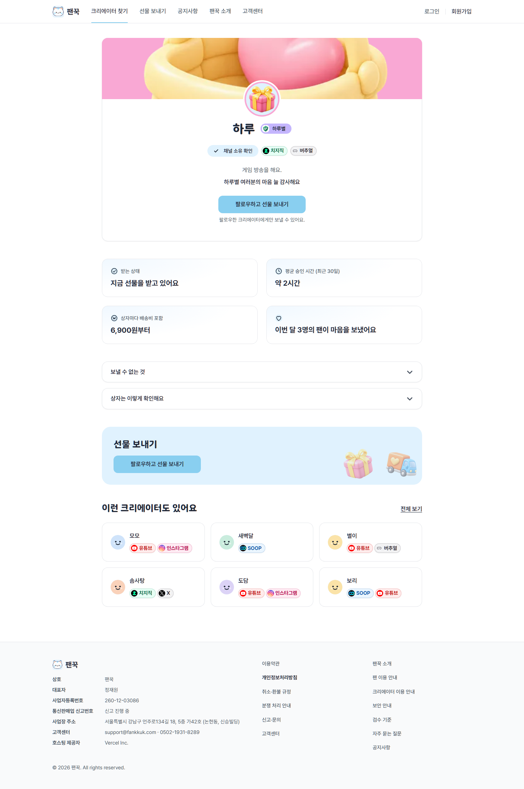
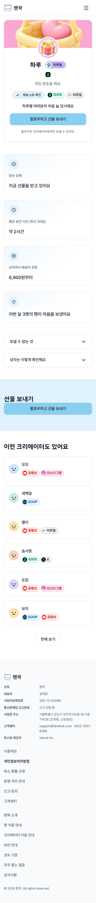
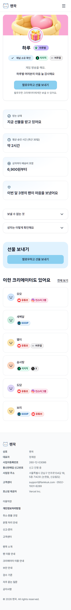
/home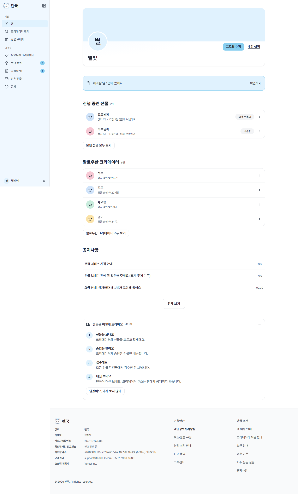
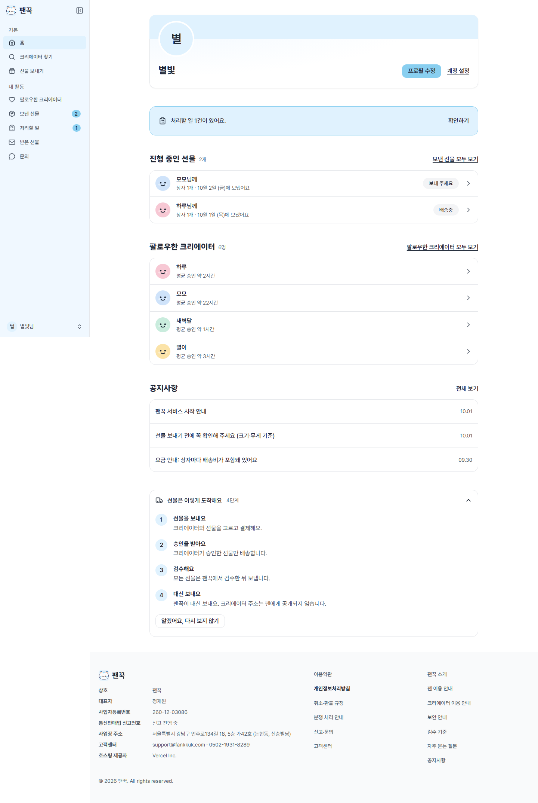
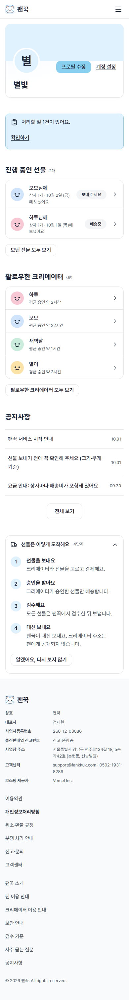
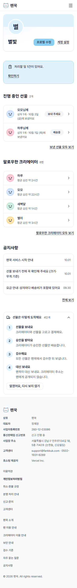